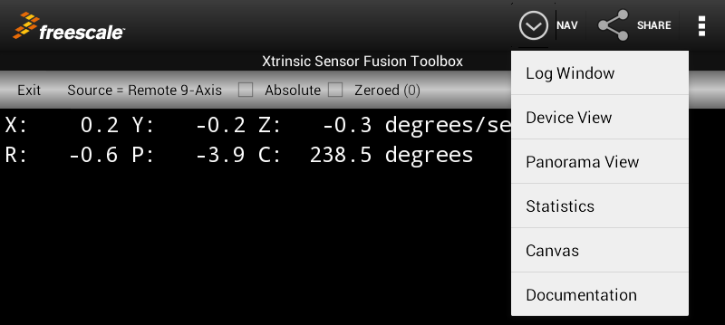
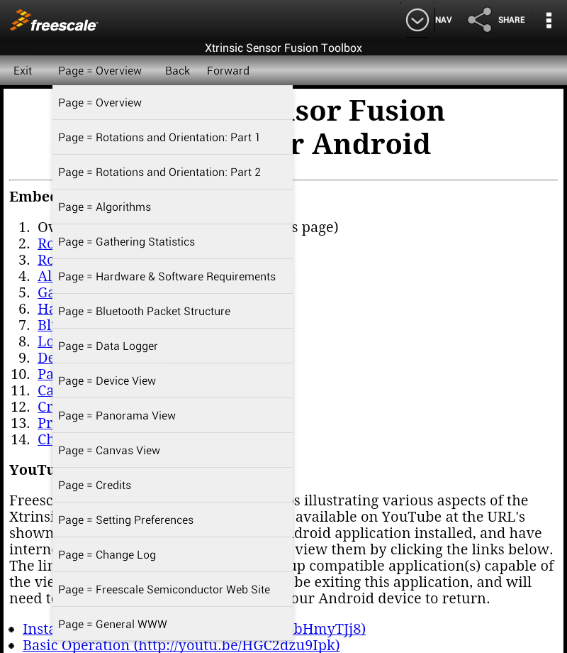

Overview
Freescale supplies a full ecosystem of tools and software libraries for development of products incorporating sensor fusion technologies. The cornerstone of that ecosystem is the Xtrinsic Sensor Fusion Library for Kinetis MCUs. Using this library, and a variety of Freescale hardware platforms, you can develop your own sensor fusion applications. Details and download links are available at http://www.freescale.com/sensorfusion.
The Freescale Xtrinsic Sensor Fusion Toolbox for Android (which is part of that ecosystem) allows you to experiment with basic sensor fusion tradeoffs. You can choose:
- to use sensor/fusion data from any of:
- the native sensors on your Android device (even if they are not Freescale sensors)
- any of the following boards, running the Freescale sensor fusion library demo program, via Bluetooth:
- Freescale Kinetis Windows 8 Sensor Platform, rev 0.5 (internal Freescale use only)
- Freescale KL25Z ARM Cortex M0+ Freedom Board with FRDM-FXS-MULTI Freedom Sensors Shield
- Freescale KL26Z ARM Cortex M0+ Freedom Board with FRDM-FXS-MULTI Freedom Sensors Shield
- Freescale KL20D50M ARM Cortex M4 Freedom Board with FRDM-FXS-MULTI Freedom Sensors Shield
- Freescale K64F ARM Cortex M4 with FPU Freedom Board with FRDM-FXS-MULTI Freedom Sensors Shield
- Avnet WiGo board with 6-axis demo app communicating via WiFi
- which of a number of algorithms to play with;
- how you would like to view the results
{kind=link}
Algorithms may vary from device to device. When using the 9-axis algorithm with native sensors, you are using the algorithm provided by your Android device manufacturer. See the Algorithms page for more details.
BUT FIRST! What is sensor fusion?
Sensor fusion encompasses a variety of techniques which can:
- Trade off strengths and weaknesses of the various sensors to compute something more than can be calculated using the individual components;
- Improve the quality and noise level of computed results by taking advantage of:
- Known data redundancies between sensors
- Knowledge of system transfer functions, dynamics and/or kinematics
Good lord! Sounds like something out of an engineering textbook. It’s more fun to look at it by example. Which, coincidentally, is why Freescale developed this application.
Accelerometers return a measured quantity which includes inertial acceleration as well as gravity. When not moving, they make a great tilt meter. But they can’t detect rotation about the gravity vector. Magnetometers have a similar problem detecting rotation about the earth’s magnetic field. But combine the two, and you have a case where each complements the other to achieve something that neither can do alone.
MEMS gyros are used to measure angular rotation, and can typically respond to changes in rotation quickly. They also often have considerable offset and drift over time. Magnetometers provide a way to place bounds on those offset and drift terms. And conversely, the gyro data is useful as a second check against magnetic interference.
You can see techniques like these in use in the great variety of iPhone, Android and Windows 8 sensor applications which can be downloaded to your phone or tablet today. And sometimes, you can see cases where the developer SHOULD have used techniques like these!
Top Level Navigation
This Android-based demontration by Freescale Semiconductor's Sensors Solutions Division shows how sensor fusion techniques can be used to power your application. The application has several states of operation. All controls appear as buttons near the top of the GUI.
Android Action Bar
Android versions 3.0 and above support use of a "standard" Android Action Bar. On this application, it contains:- The Navigation button
selects between any one of the following major modes of operation:
- The Log Window is used to monitor sensor configurations, outputs and other messages from the application. The Log Window shows only the last 100-200 lines displayed by the application. Earlier history is deleted so that the GUI remains responsive. You CAN save a complete session by checking "File logging enable" on the Device, Panorama and Logging screens.
- The Device View and Panorama View utilize exactly the same set of controls, but offer different visual perspectives for interpreting the result. The device view displays a simple 3D image of a printed circuit board. When you have set the Source Spinner to a 3, 6 or 9-axis fusion option (explained elsewhere) you will see the PCB appear to realign itself on the screen. If using the native sensors on your Android device, the PCB will attempt to "hold steady" in space, regarless of how you rotate your Android device. If using a Freescale sensor fusion board via Bluetooth, the PCB on the screeen should track the movements of the actual PCB. The Panorama view actually places you inside a virtual 3D room. Your perspective will change as you rotate your Android device (or Freescale sensor fusion board).
- The Statistics View allows you to gather quantitative at-rest measurements from your sensors and fusion code.
- The Canvas View works with the sensor development boards mentioned above. It lets you use your development board as an "absolute 3D pointer" into space. This is called the "Canvas View" because we use an Android Canvas graphic object to display a cursor whose location tracks the orientation of your development board.
- The Documentation View provides a basic introduction to the device (this page), some tutorial information on the topic of sensor fusion, and details of the various program options.
 - The Share button
allows you to email information based on these choices:
- Graphics Screen
- Data Logger Transcript (Nav = Log Window)
- Logger Output file (file logging is enabled via the "File logging enable" checkbox which is adjacent to the Source Spinner control).
- Statistics Report

- On some devices, the Option Menu button
 looks like three vertically stacked periods. On other devices (notably phones), the options menu is mapped to a hardware
button on your device. Either way, it gives you access to a variety of lesser used functions:
looks like three vertically stacked periods. On other devices (notably phones), the options menu is mapped to a hardware
button on your device. Either way, it gives you access to a variety of lesser used functions:
- The Preferences Screen
- View Statistics Report
- Toggle Split Screen - allows you to view documentation AND interactive graphics screen or logging window.
- Enable/Disable hex dump (Remote and WiFi only) can be used to enable a dump of incoming data in hex format to the Log Window
- Enable/Disable legacy dump can be used to enable a dump of incoming data in legacy format to the Log Window
- Enable/Disable csv dump (Remote and WiFi only) can be used to enable a dump of incoming data in csv format to the Log Window
- Clear Log Window - will clear the logging window and close any open output files.
- Dump Android Configuration - will dump a report to the logging window which describes details of the sensor configuration on your Android device, as well as OS details.
- About - Freescale Copyright, program version and disclaimer.
- Help - will display this page
- Feedback - selecting this option will initiate a sequence of events:
- Configure the app for logging
- Clear the log window
- Write feedback template
- Dump Android sensor configuration
- Invoke the log window "share intent", which should post an email client with the template for your feedback.

{kind=link}
Fusion Settings Bar
Immediately below the Android Action Bar, we have the Fusion Settings Bar. This application-specific set of controls include:
- The Exit button is always present. Clicking this button will exit the application.
- The Source/Algorithm spinner control (see details on the Logging page) is present on all screens which utilize sensor data. It allows you to select which combination of data source and fusion algorithm to experiment with.
- The File logging enable checkbox can be used to send sensor and fusion outputs to a file stored on your device's permanent storage. When in use, the number of messages written to the log file is displayed in parenthesis next to the checkbox label.
- Another checkbox will be visible when using 3 or 6-axis options on the Source/Algorithm spinner. The LPF Enable checkbox lets you enable low pass filtering of sensor outputs BEFORE they are fed to fusion algorithm inputs (only applicable to some options, see the Algorithms page).
- Finally, some parts of the application may occasionally write short status messages to the right-most side of the Fusion Settings Bar controls.
Documentation pages, such as this, include additional buttons in the Fusion Settings Bar:
- The Page spinner control is used to bring a specific documentation page to the foreground.

The last two entries on the Page spinner deserve mention:
- "Freescale Sensor Website" requires that your device have internet access, as it will attempt to navigate to http://www.freescale.com/sensors. If you are behind a firewall, you may get a page displayed by your firewall instead of the Freescale site.
- A number of the documentation pages contain links to other sites on the web. The Page Spinner should display "General WWW" whenever any other page is displayed. Otherwise it should identify the current documentation page. Selecting "General WWW" on the Page spinner has no effect.
- The Back Button operates the same as the "back button" on any web browser.
- The Forward Button operates the same as the "forward button" on any web browser.
{kind=link}
Split Screen Mode
Because it is nice to be able to do to things at once, this application offers a split screen mode which allows you to view documentation pages at the same time you are utilizing other tasks. The screen shot below shows the application open to the help page on the Panorama View at the same time that feature is being exercised in the lower pane.
{kind=link}
Split screen mode is selected via Options Menu->Toggle Split Screen.
Using Swipe Navigation in the Documentation View
This documentation view supports swipe gestures. If you touch the screen on either the left or right side of the screen and sweep across the screen by at least 1/3 of the width of the screen, you will automatically be taken to the previous/next page in the documentation. The vertical distance covered by your gesture should be less than 1/5 of the screen height. Gestures which are below a certain minimum threshold in terms of speed are also rejected. Experiment with the interface to get a feel for it.The figure below illustrates valid swipes (shown in green), as well as invalid swipes (shown in red).
{kind=link}
Continue to Rotations and Orientation: Part 1.